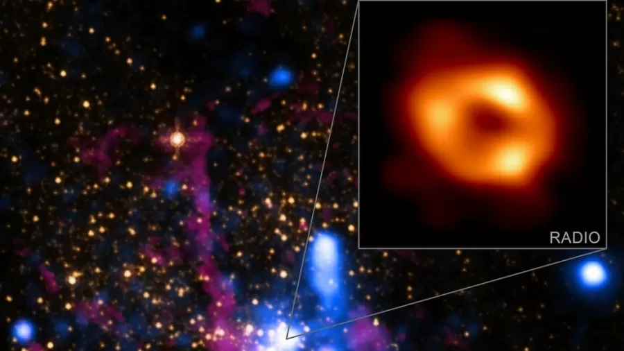
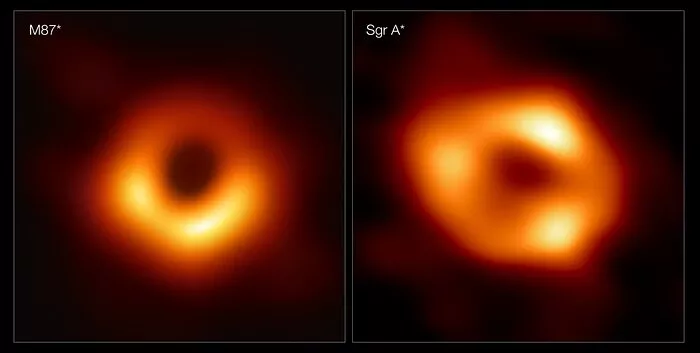

#OurBlackHole #SgrABlackHole
#BuracoNegro #SargittariusA
Sagittarius A*
O Sagittarius A* é o segundo buraco negro já fotografado (lembrando que a foto é do anel luminoso, que possui um formato bem característico na presença de um buraco negro), o primeiro foi o M87, observado três anos atrás e que está localizado no centro da galáxia de mesmo nome.

#M87BlackHole
#BuracoNegro #Messier87 #M87
M87
Messier 87 (M87) é uma galáxia elíptica supergigante localizada na constelação de Virgem, uma das mais massivas do Universo local. Ela possui uma grande população de aglomerados globulares e um distinto jato de plasma energético que se origina em seu núcleo e estende-se por pelo menos 4,9 mil anos-luz, viajando em uma velocidade relativista. No seu núcleo há um buraco negro supermassivo.